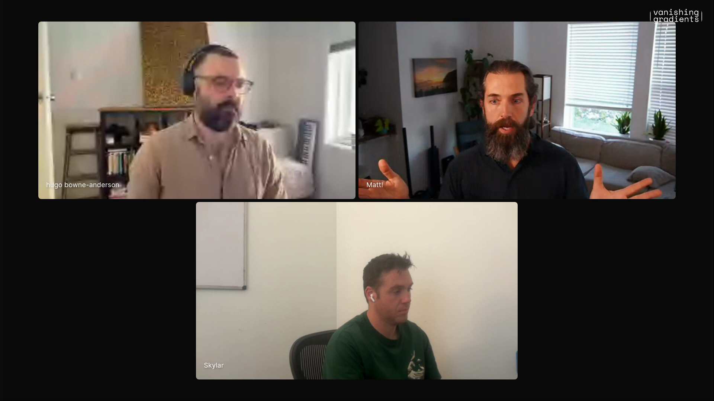
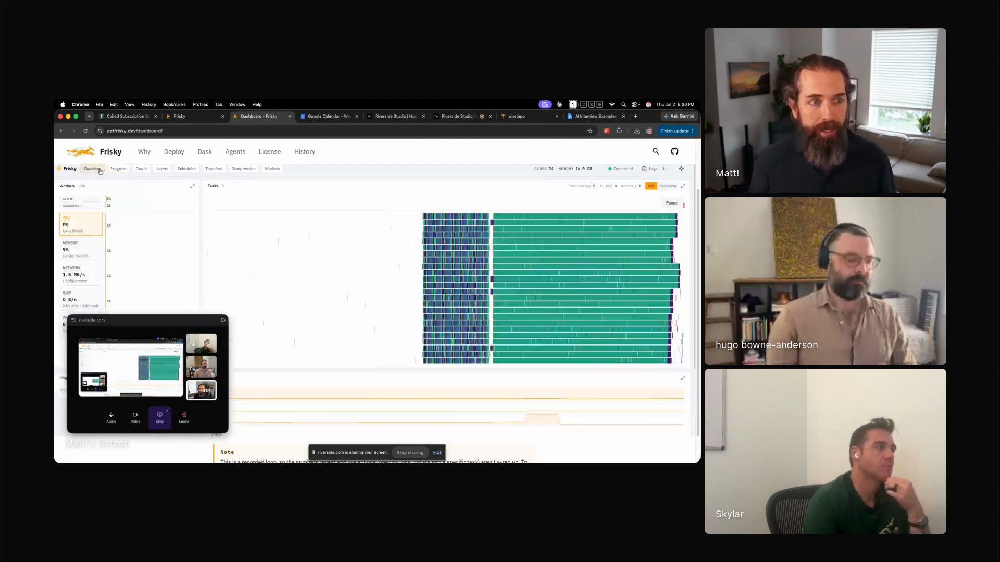

company-context-agents
Give agents a directory that describes the whole company. The billing gap and the MSA rewrite both came from that one surface.
Matt runs Coiled in five to ten hours a week, largely with agents that read a directory describing the whole company: accounting, engineering, customers, legal, insurance. Those agents found customers with contracts and real usage who were never being billed. His Rust projects run the same way: Frisky, a Dask-like distributed system, exposes dashboards, telemetry, and a documented CLI so agents can inspect the system they are changing. He writes the plans by hand, walks away for an hour or two, and reviews with targeted evidence: benchmarks, algorithm explanations, line counts, fresh agents.

"People should drink more when writing agents."
Coiled used to be a VC-funded startup. It now runs as what Matt calls a lifestyle company: five to ten hours of his week for a business making roughly one or two million dollars a year, with agents doing much of the operating.
The operating surface is a directory that describes the company, with sections for accounting, engineering, customers, legal, and insurance. Matt says the agents "actually understand the full company in a way that historically no individual has," and they are "B plus programmers that are also B plus lawyers." That reach found customers with contracts and heavy usage who were never being billed, and it rewrote Coiled's master services agreement into a document far more tuned to the company.
The same discipline runs at project scale. His AGENTS.md files reach five to ten thousand words, all handwritten, culled and refactored every week or two. They carry principles rather than how-tos, so every agent starts with a hundred lines on the concepts that recur through the repository.

"All of it."
"AI observability often means observing your agents rather than giving your agents observability over the system that they're building."
Frisky is Matt's Rust replacement for Dask, the distributed Python framework he created. It started as an art project, then came back during consulting work on large financial services datasets: "I was using Dask and Dask was annoying to use because it was both slow and opaque." Rust made a ton of telemetry cheap enough to leave on, so the dashboards and internal state exist for the agents as much as for him.
Frisky ships a documented CLI. Agents follow the CLI pages, run more commands when they need detail, and get feedback about what is happening inside the distributed system. When they see the telemetry, Matt says, "they're like, oh, this is delightful."
His first AI-built product was a Rust reimplementation of NumPy that converged in roughly a week because the NumPy test suite and benchmarks were right there. The code stays small too: Frisky lands at about the same line count as Dask, and the NumPy rebuild at about a tenth of NumPy's.

"Even a fairly dumb agent can build something very robust if they've got access to very good feedback."
Give agents a directory that describes the whole company. The billing gap and the MSA rewrite both came from that one surface.
Plan around the feedback signal, leave the agent alone for long turns, and encode recurring review questions so every agent gets them.
Frisky's AGENTS.md rebuilt from the visible parts of the screen share: project overview, development tools, usage, and a performance section.
Matt's post on broad context, cross-domain reasoning, and feedback systems.
Matt's written example of Frisky working with Xarray.
"People know to ask for a fresh agent to come in and review things." A reviewer with clean context closes out the work.
"Agents can be a very dehumanizing experience. They can turn you into machines that give permission."
"The value proposition of Python is low."